定食と一品料理 ／ 茨城県古河市 下辺見
今日も米を研いで、灯りをつけて。
2015年の春から、古河・下辺見で営んでおります。
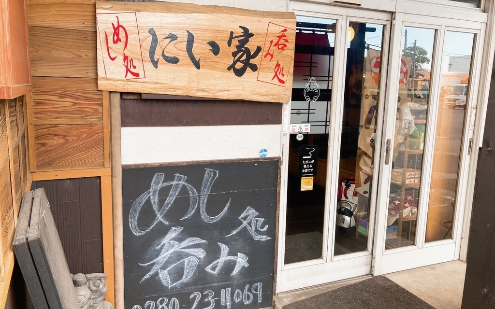
にい家という店
当店は、二軒ではございません。昼はめし処として定食を、日が暮れてからは呑み処として肴とお酒をお出ししております。台所はひとつ。昼の定食でお気に召したおかずは、夜にはそのまま一品の肴になります。同じ台所から、同じ手でお出ししております。
めし処（昼のお品書きより）
呑み処（夜の一品より）
看板料理
いちばん多くご注文いただくのが唐揚げです。やわらかい鶏もも肉に、にんにくは程よく、黒胡椒を効かせて揚げております。香味だれをかけた「唐揚げ香味」もご用意しておりますので、味を変えてもう一皿、という楽しみ方もどうぞ。
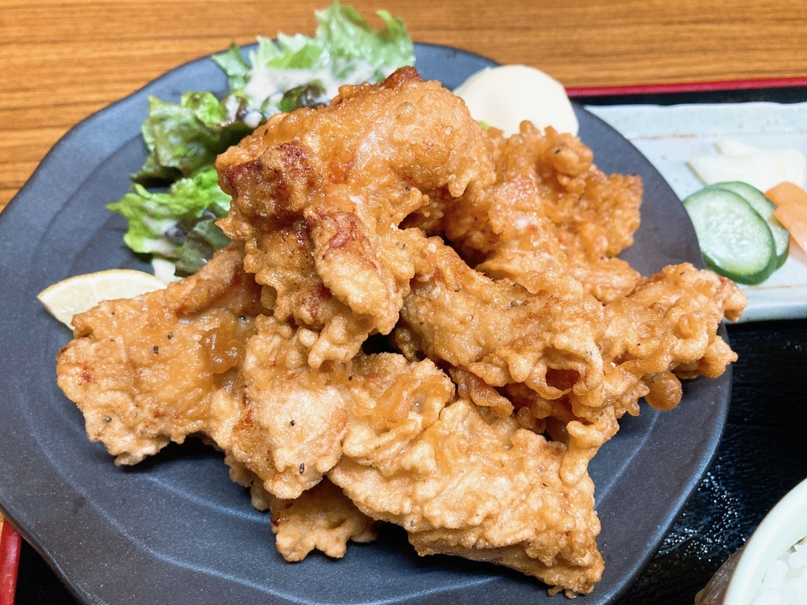
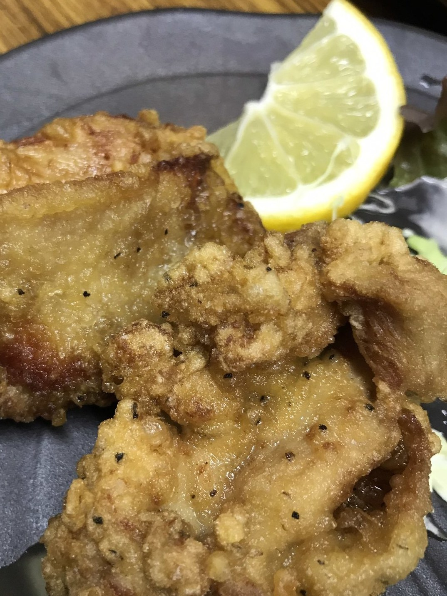
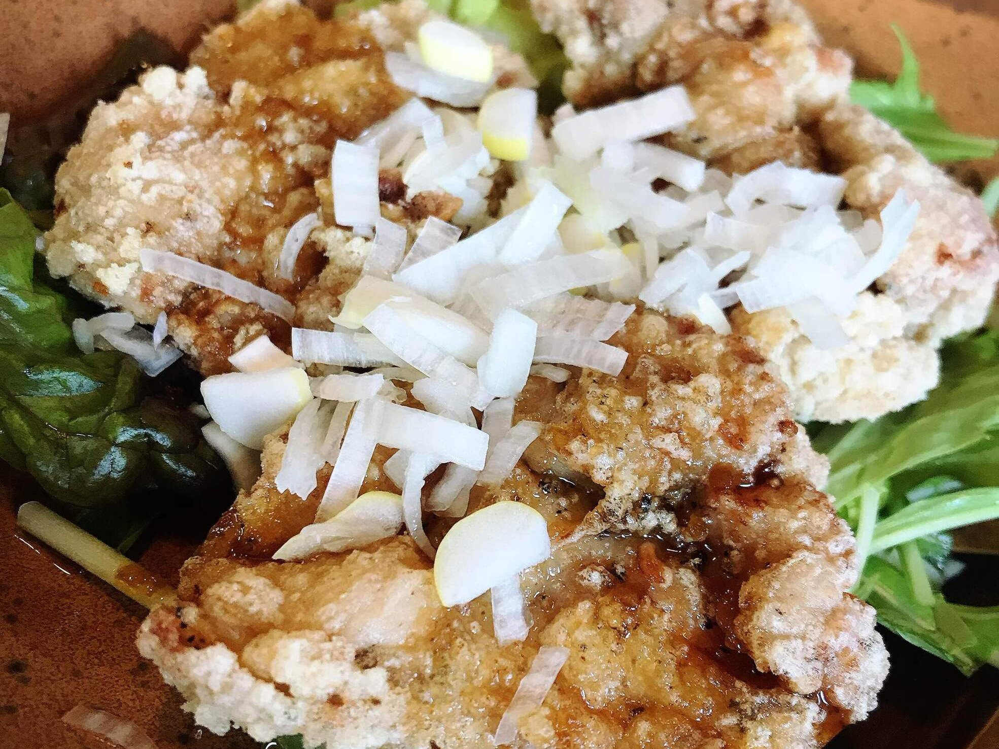
めし処にい家
肉の主菜から焼き魚、丼ものまでご用意しております。ぬか漬けは店で漬けている自家製です。玉子焼きを焼いて定食にお付けするのが、当店の変わらぬやり方です。味噌汁は赤味噌仕立てでお出ししております。
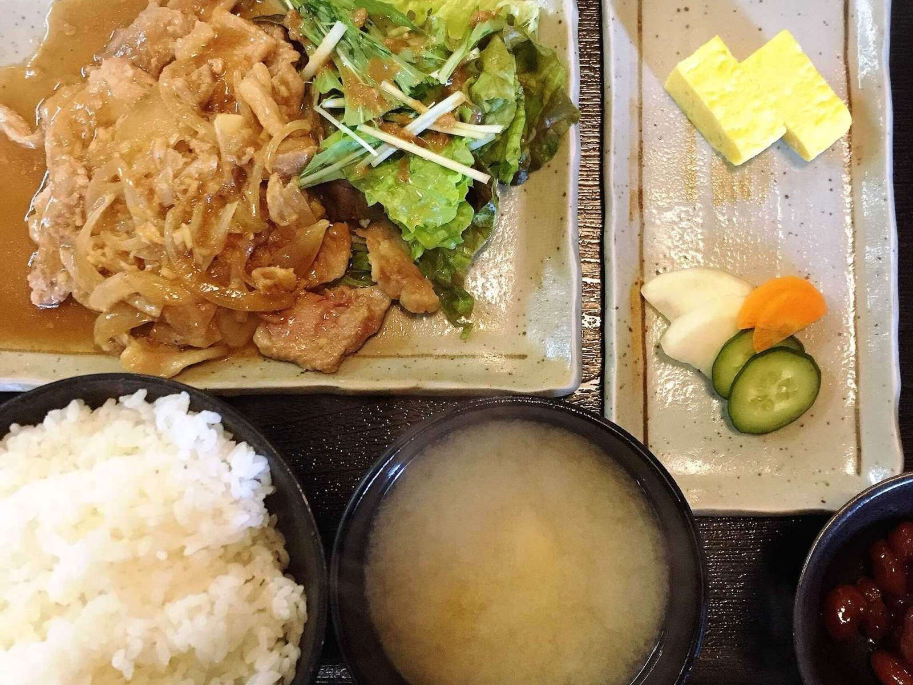
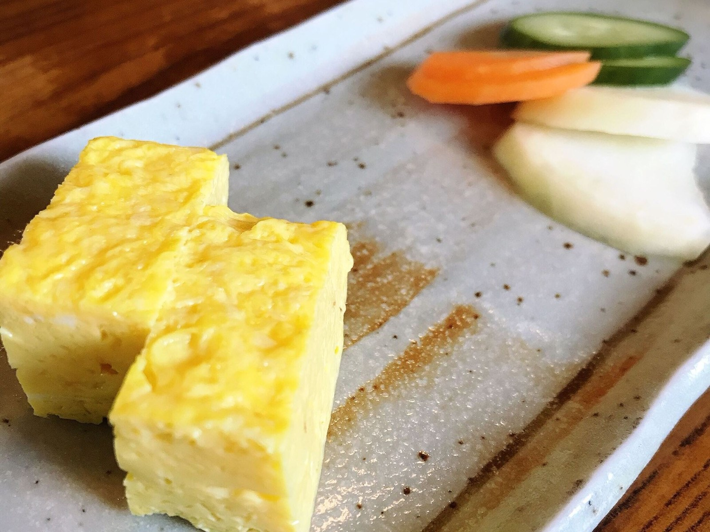
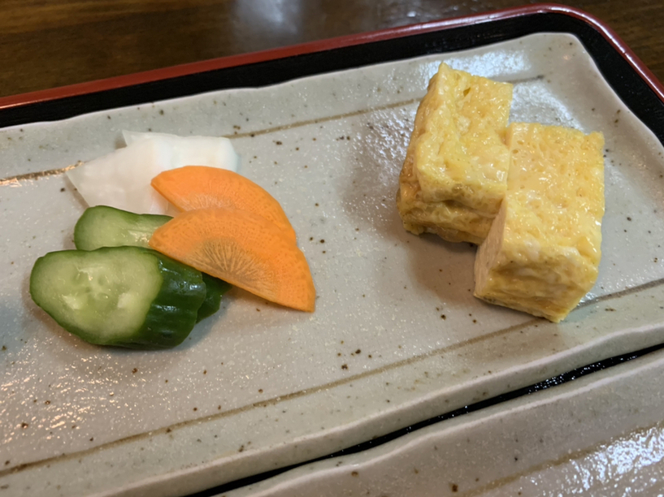
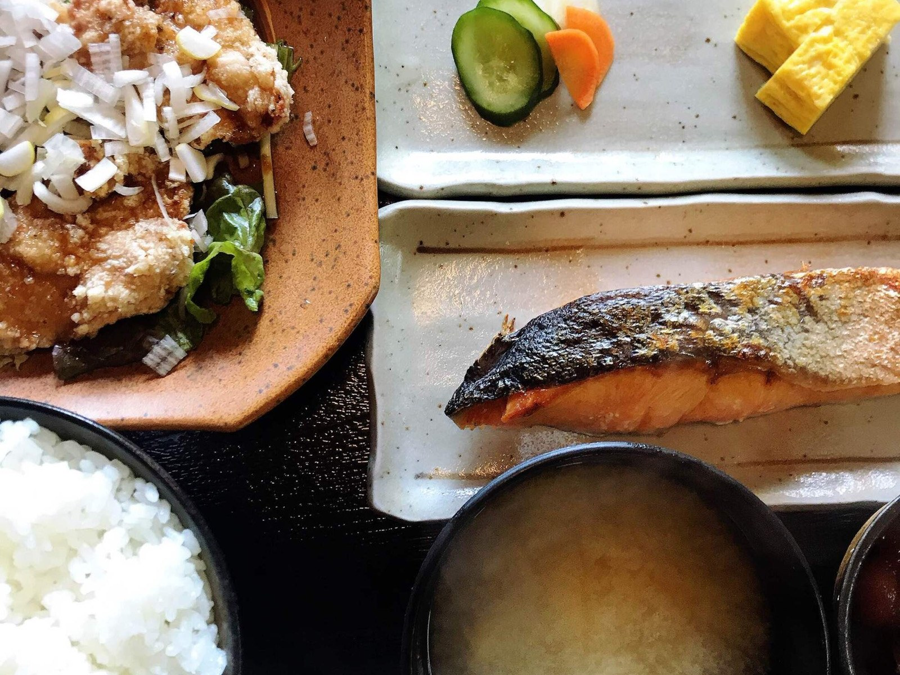
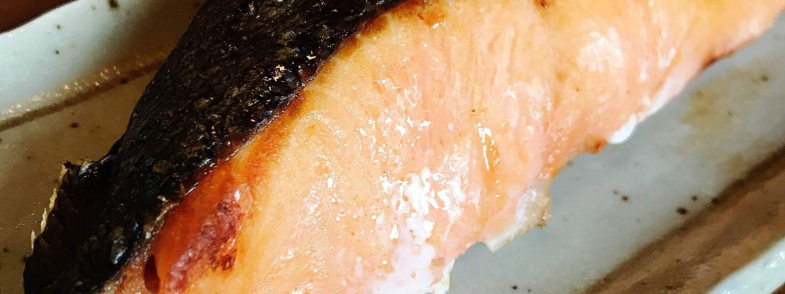
呑み処にい家
お仕事帰りの一杯にも、お仲間とのゆっくりした呑み直しにも、どうぞお使いくださいませ。肴は一品からお出しします。呑んだあとには、焼きおにぎりや稲庭うどんで、しめまでお付き合いいたします。
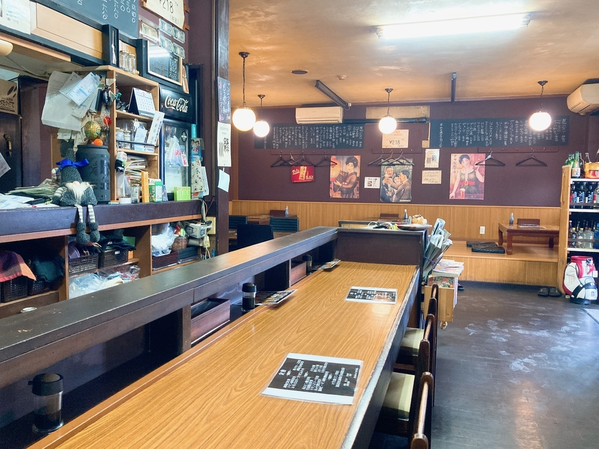
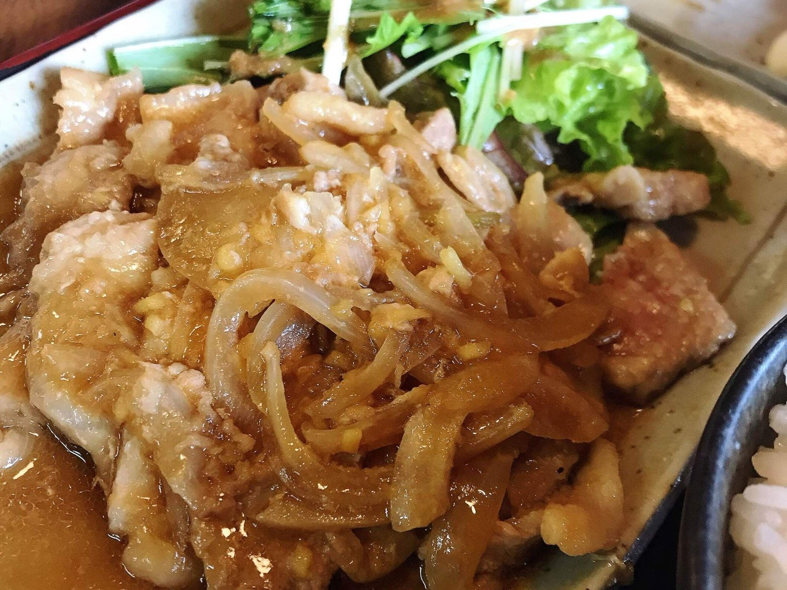
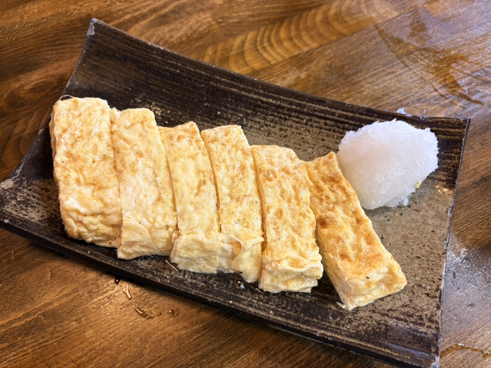
カウンターと、テーブルと、小上がりのお座敷をご用意しております。お一人さまはカウンターへ、ご家族やお仲間とはお座敷へどうぞ。一枚板のカウンターの向こうには、その日のおすすめを書いた黒板を掛けております。
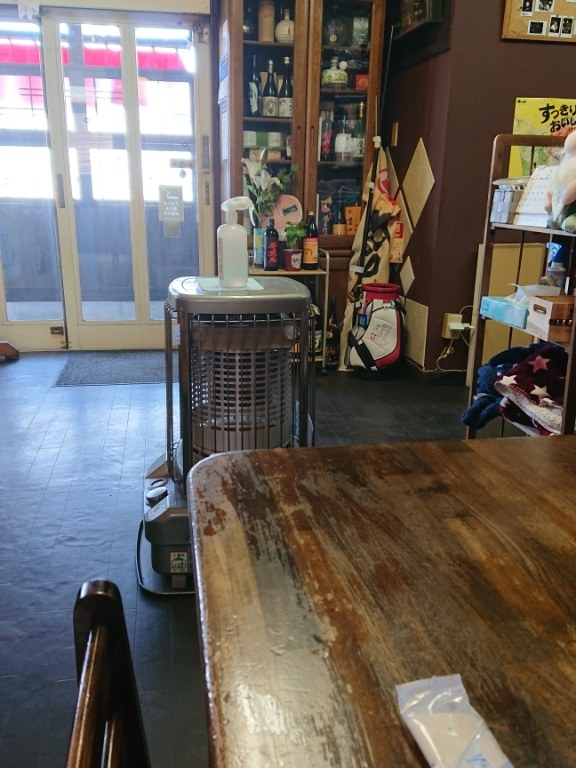
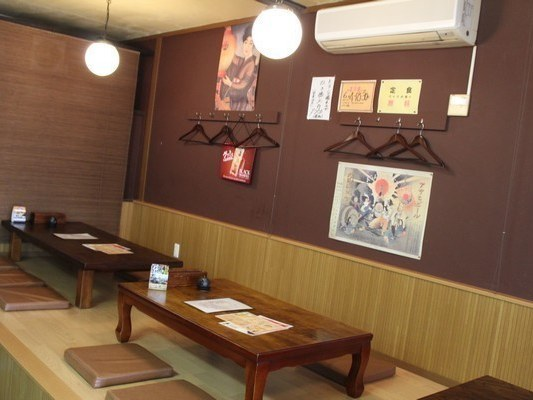
「唐揚げ定食やわらかい鶏もも肉を使用する。程よいニンニク風味でうまい。ピリッと黒胡椒が効いてるのも良いね。６個あるので、ボリュームは申し分ない。」
「ダシがきいてて、ちょっとだけ甘くてふわふわ。正油とか何もかけず、大根おろしをたっぷりのせて食べるのがオススメ」
「久しぶりの訪問です。唐揚げがおすすめですが今日は生姜焼き定食を注文。ご飯が進む味付け。ここはボリュームが凄いです。ご飯の炊き具合が自分好みなんです。」
お客様からいただいた声より
ご来店にあたって
お休みは不定でいただいております。お越しの前にお電話をいただけますと確かです。お支払いは現金のほか、カードもお使いいただけます。電子マネー・QRコード決済はご容赦くださいませ。
アクセス
下辺見の交差点の角にございます。お車は店の前にお停めいただけます。バスをお使いの方は「下辺見小学校西」でお降りいただくと、歩いて3分ほどです。
| 住所 | 〒306-0235 茨城県古河市下辺見2857 |
|---|---|
| 最寄り | 古河駅から約2.8km／バス停「下辺見小学校西」から徒歩3分 |
| 電話 | 0280-23-4069 （タップで発信できます） |
| 営業時間 | 昼 11:30〜14:45／夜 17:30〜 |
| 定休日 | 不定休（お越しの前にお電話ください） |
| お席 | カウンター・テーブル・小上がりのお座敷 |
| 駐車場 | 店の前にお停めいただけます |
| お支払い | 現金・クレジットカード |
お腹を空かせて、お越しくださいませ。
0280-23-4069ご予約はこちら